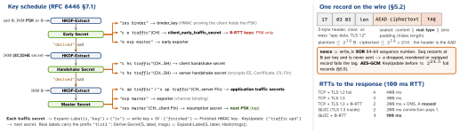

networking · folio
In one line: TLS 1.3 (RFC 8446) feeds its input secrets — a PSK and the ECDHE result — through three HKDF-Extract stages (Early → Handshake → Master); every key is an HKDF-Expand-Label of one of them bound to the transcript hash, so each phase and direction has independent keys. Records are AEAD-sealed with a per-record nonce. A ticket makes a PSK for resumption; 0-RTT data is replayable; ECH hides the SNI.
Download PDF Print view LaTeX source


How the key schedule works
- Extract = HMAC(salt, input): concentrates entropy. Expand-Label derives keys with a label + transcript hash as context — a key is valid for one role, one direction, one exact conversation (tampered hello ⇒ other keys ⇒ Finished fails).
- No ECDHE (
psk_ke) ⇒ input 0 ⇒ no forward secrecy. Finished = HMAC(finished_key, transcript hash). SSLKEYLOGFILEdumps these traffic secrets: enough to decrypt a capture, not to impersonate.
Resumption and 0-RTT (§4.6.1, §8)
- Post-handshake NewSessionTicket: lifetime ≤ 7 days,
ticket_age_add, nonce, opaque ticket (usually the PSK sealed under a server ticket key — stateless). - Next CH:
pre_shared_key(identity, obfuscated age, binder) + modepsk_dhe_ke(fresh ECDHE, FS) orpsk_ke. Saves certificate + signature (CPU), still 1 RTT. - 0-RTT (
early_data): app data right behind the CH, keyed from the PSK alone — a captured flight can be replayed. Defences (§8): single-use tickets · ClientHello recording · freshness window. HTTP (RFC 8470): 425 Too Early; proxies addEarly-Data: 1.
Example — look inside a real connection
openssl s_client -connect example.com:443 -tls1_3 \
-servername example.com -alpn h2,http/1.1 \
-status -sess_out s.pem -keylogfile keys.txt
# -status: print the stapled OCSP answer, if any
openssl s_client -connect example.com:443 \
-sess_in s.pem -early_data get.txt # resume + 0-RTT
# keys.txt: CLIENT_TRAFFIC_SECRET_0 ... (for Wireshark)SNI and ECH
SNI (RFC 6066) is cleartext. ECH: RFC 9849, March 2026 (+ RFC 9848: config in the DNS HTTPS record). An outer CH names the provider’s public_name; the inner CH (real SNI, ALPN) is HPKE-encrypted to the provider’s key; stale key → retry_configs; GREASE ECH hides who really uses it. Plain DNS or a dedicated IP still leak. Apple: sec_protocol_options_set_enable_ encrypted_client_hello (Network framework) is documented “experimental”, default off; no URLSession switch(unverified).
Revocation — why lives got short
| CRL | signed list of revoked serials; big, stale until reissued |
| OCSP | live query: leaks browsing to the CA, costs an RTT, soft-fails |
| stapling | server attaches a signed OCSP answer (1.3: in the Certificate entry) |
| short-lived | nothing to revoke — the cert dies first |
Let’s Encrypt shut OCSP down 6 Aug 2025 (CRLs only); 6-day certs GA 15 Jan 2026. CA/B SC-081: max cert life 200 d from 15 Mar 2026 → 100 d (2027) → 47 d (2029): automate renewal.
ALPN, QUIC, post-quantum, reuse
- ALPN (RFC 7301): CH offers
h2,http/1.1; server picks in EncryptedExtensions.h3: advertised viaAlt-Svc(RFC 9114), then ALPNh3inside QUIC. - TLS in QUIC (RFC 9001): no TLS records — handshake bytes in CRYPTO frames; packet keys from the same secrets (
"quic key","quic iv","quic hp"). Initial packets are keyed from the Destination Connection ID + a public salt: obfuscated, not secret. - iOS 26: URLSession/Network offer hybrid X25519MLKEM768 by default; the bigger ClientHello breaks some legacy servers that can’t read large ones (Apple’s warning).
- Reuse beats tuning: one long-lived
URLSessionper config (its pool keeps h2/h3 alive), never one per request. ARMv8 AES instructions make AES-GCM cheap on phones(unverified).
Traps
- “Resumption saves an RTT” — in 1.3 only 0-RTT does, and it is replayable: idempotent requests only.
- Stolen ticket key → every PSK → all 0-RTT data and
psk_kesessions. Rotate it. - OCSP soft-fail stops no attacker who can block the responder.
legacy_session_id,0x0303in 1.3: middlebox camouflage.